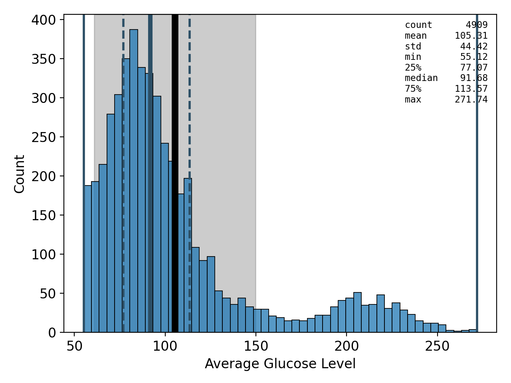

spellbook.plot1D¶
Lower-level functions for creating 1D / univariate plots
The high-level functions for creating plots, which make use of the functions
in this module, can be found in plot.
Functions:
|
Draw a vertical barchart |
|
Draw a boxplot |
|
Draw a histogram |
-
spellbook.plot1D.barchart(data, x, fig, grid, gridindex, xlabel=None, histplot_args={})[source]¶ Draw a vertical barchart
- Parameters
data (
pandas.core.frame.DataFrame) – The dataset to plotx (
str) – Name of the variable to plotfig (
matplotlib.figure.Figure) – The figure on which to drawgrid (
matplotlib.gridspec.GridSpec) – The grid on the figure in which to drawgridindex (
int) – The index of the grid cell in which to drawhistplot_args – Optional. Arguments for
seaborn.histplot()
- Return type
matplotlib.axes._axes.Axes- Returns
The axes object drawn. The axes object is already added to the figure, but it is returned as well so that it can be caught for easier access and manipulation
-
spellbook.plot1D.boxplot(data, ax, x=None, y=None, orient='v', lw_mean=6.0, lw_median=4.0, show_axis=True, show_stats=True)[source]¶ Draw a boxplot
Todo
Document
spellbook.plot1D.boxplot()
-
spellbook.plot1D.histogram(data, fig, grid, gridindex, x=None, xlabel=None, CL_mean=95, lw_mean=6.0, lw_median=4.0, lw_quartiles=2.0, show_histogram=True, show_decorations=True, show_mean=True, show_std=True, show_sem=True, show_median=True, show_quartiles=True, show_min=True, show_max=True, show_axis=True, show_stats=True, histplot_args={}, statsbox_args={}, ymin=None, ymax=None, yscale=None)[source]¶ Draw a histogram
Besides the pure histogram itself, various lines, bands and bars can be drawn that indicate a range of descriptive statistics:
a black line for the mean
a grey band for the standard deviation
a black error bar indicating the confidence interval of the standard error of the mean at a desired level
a thick dark blue line for the median
thin dashed lines for the 25% and 75% quartiles
thin solid lines for the minimum and maximum values
- Parameters
data (
pandas.DataFrame,numpy.ndarrayortf.Tensor) – The data to plotfig (
matplotlib.figure.Figure) – The figure on which to drawgrid (
matplotlib.gridspec.GridSpec) – The grid on the figure in which to drawgridindex (
int) – The index of the grid cell in which to drawx (
typing.Optional[str]) – Optional. The name of the variable to plotxlabel (
typing.Optional[str]) – Optional. The x-axis label.CL_mean (
int) – Optional. The confidence level in percent for the uncertainty bar around the mean giving the standard error of the meanlw_mean (
float) – Optional. The linewidth of the meanlw_median (
float) – Optional. The linewidth of the medianlw_quartiles (
float) – Optional. The linewidth of the quartilesshow_histogram (
bool) – Optional. If the histogram should be shownshow_decorations (
bool) – Optional. If set toFalse, none of the lines and errors bands/bars indicating the descriptive statistics will be shownshow_mean (
bool) – Optional. If the mean should be shownshow_std (
bool) – Optional. If the standard deviation should be shownshow_sem (
bool) – Optional. If the standard error of the mean should be shownshow_median (
bool) – Optional. If the median should be shownshow_quartiles (
bool) – Optional. If the quartiles should be shownshow_min (
bool) – Optional. If the minimum value / 0% percentile should be shownshow_max (
bool) – Optional. If the minimum value / 1000% percentile should be shownshow_axis (
bool) – Optional. If the axes, including labels, ticks and ticklabels should be shownshow_stats (
bool) – Optional. If a box giving the values of the descriptive statistics should be shownhistplot_args (
dict) – Optional. Arguments forseaborn.histplot()statsbox_args (
dict) – Optional. Arguments forspellbook.plotutils.statsbox()ymin (
typing.Optional[float]) – Optional. The lower view limit of the y-axis.ymax (
typing.Optional[float]) – Optional. The upper view limit of the y-axis.yscale (
typing.Optional[str]) – Optional. The type of scale used for the y-axis. Seematplotlib.axes.Axes.set_yscale().
- Returns
The axes object drawn. The axes object is already added to the figure, but it is returned as well so that it can be caught for easier access and manipulation.
- Return type
Examples:
plotting a
pandas.DataFrameimport matplotlib as mpl import numpy as np import pandas as pd import spellbook as sb fig = mpl.pyplot.figure(tight_layout=True) grid = mpl.gridspec.GridSpec(nrows=1, ncols=1) x = np.random.normal(size=1000) data = pd.DataFrame({'x': x}) ax = sb.plot1D.histogram(data, fig, grid, gridindex=0, x='x')
plotting a
numpy.ndarray(tf.Tensoranalogous)import matplotlib as mpl import numpy as np import spellbook as sb fig = mpl.pyplot.figure(tight_layout=True) grid = mpl.gridspec.GridSpec(nrows=1, ncols=1) x = np.random.normal(size=1000) ax = sb.plot1D.histogram(x, fig, grid, gridindex=0, xlabel='x-axis label')
{kind=link}